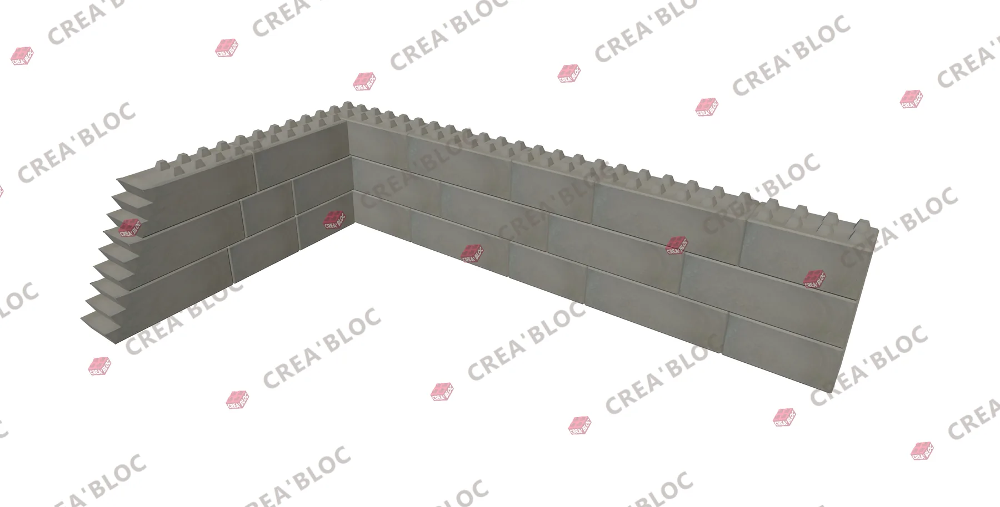
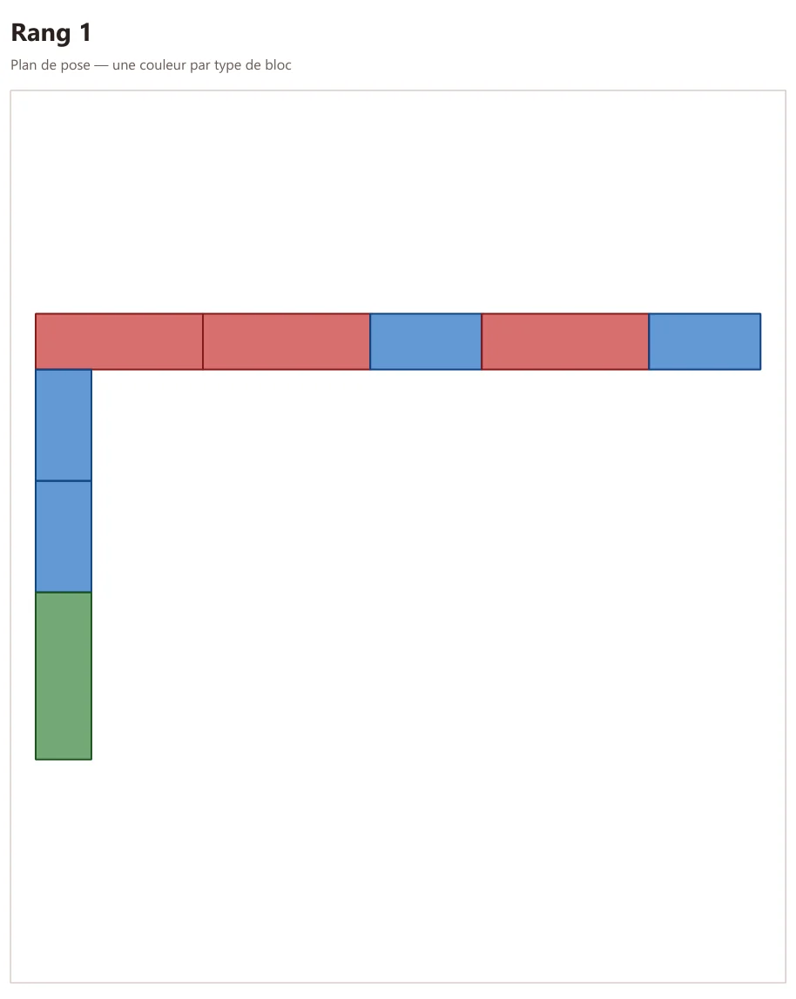
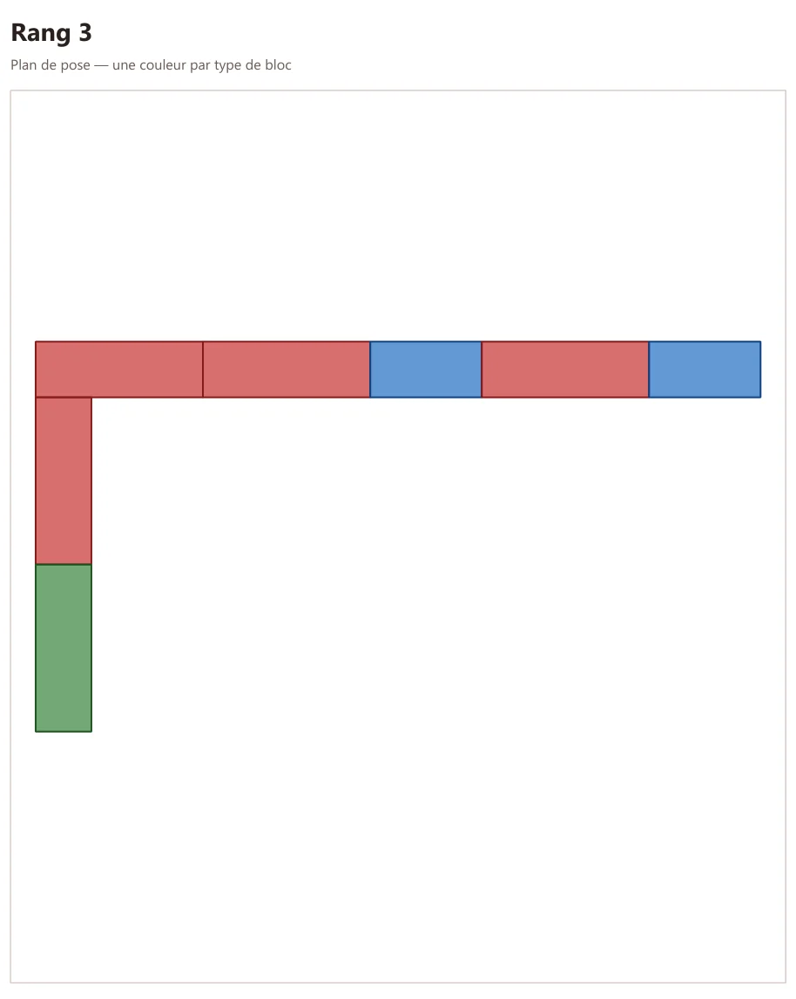
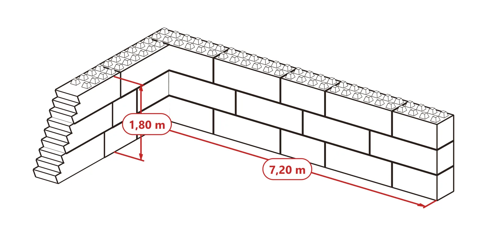
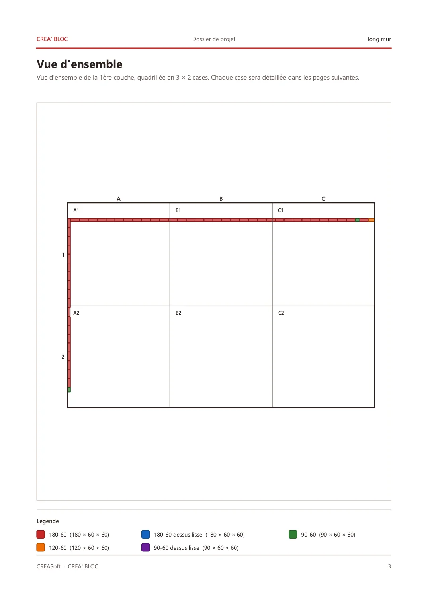
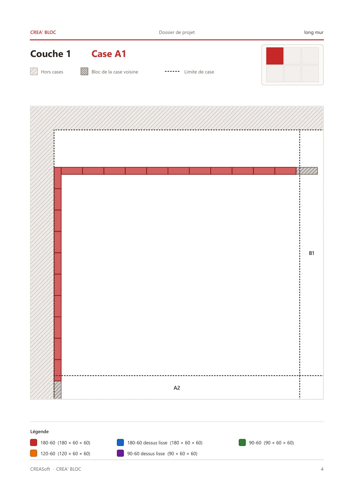

Software für Verlegepläne von Crea'bloc
Sie zeichnen die Mauer.
CREASoft setzt jeden Block, Lage für Lage.
Zeichnen Sie den Grundriss Ihrer Mauer aus Crea'bloc-Blöcken. Die Software verteilt die Blöcke auf jede Lage mit versetzten Fugen, zeigt Ihnen die Mauer in 3D und druckt die Baustellenmappe mit der genauen Liste der zu bestellenden Blöcke.
Für Windows und macOS (Mac mit Apple Silicon, macOS 13 oder neuer). Die Software selbst ist auf Französisch.

Die vier Schritte
-
1
Zeichnen
Sie zeichnen die Achse der Mauern auf einem Raster oder über einem eingescannten, maßstäblichen Plan.
-
2
Erzeugen
Ein Klick, und jede Mauer füllt sich mit den Blöcken, die Sie zugelassen haben.
-
3
In 3D prüfen
Sie drehen sich um die Mauer, setzen Maße und machen Bilder.
-
4
Drucken
Die PDF-Mappe geht an den Kunden oder auf die Baustelle: Blockliste und Verlegeplan für jede Lage.
Ein Plan, der seine Maße behält, wenn Sie ihn ändern
Legen Sie Regeln auf die Zeichnung: Diese Mauer bleibt senkrecht, diese beiden bleiben parallel, jene ist 10 m lang. Wenn Sie danach eine Ecke ziehen oder eine Fassade verlängern, folgt der Rest des Plans von selbst und alle Regeln bleiben erfüllt.

Die acht Regeln des Plans
- Waagerechtmacht eine Linie waagerecht oder richtet Punkte aus.
 Senkrechtdasselbe, senkrecht.
Senkrechtdasselbe, senkrecht. Fixierenhält einen Punkt, eine Linie oder eine Mauer an ihrem Platz.
Fixierenhält einen Punkt, eine Linie oder eine Mauer an ihrem Platz. Deckungsgleichvereint zwei Punkte oder lässt einen Punkt an einer Mauer entlanggleiten.
Deckungsgleichvereint zwei Punkte oder lässt einen Punkt an einer Mauer entlanggleiten.- Parallelhält zwei Mauern parallel.
 Rechtwinklighält zwei Mauern im rechten Winkel.
Rechtwinklighält zwei Mauern im rechten Winkel. Längelegt eine Länge oder einen Abstand fest, in Metern.
Längelegt eine Länge oder einen Abstand fest, in Metern. Winkellegt den Winkel zwischen zwei Mauern fest, in Grad.
Winkellegt den Winkel zwischen zwei Mauern fest, in Grad.
Würde eine Verschiebung eine Regel verletzen, meldet CREASoft, dass die Position unmöglich ist, und lässt den Plan unverändert.
Der Magnet
Punkte rasten am Raster, an Mauerenden und an Kreuzungen ein. Ecken schließen sauber.
Der Hintergrundplan
Importieren Sie den Plan des Architekten oder ein Luftbild, stellen Sie den Maßstab mit zwei Klicks auf einem bekannten Maß ein und zeichnen Sie darüber.
Jede Mauer einzeln eingestellt
Höhe in Anzahl Blöcken, glatte Oberseite, abgetreppte Mauer, zugelassene Blöcke auf dieser Linie: Alles wird im rechten Bereich eingestellt.
Der Verlegeplan, für Sie berechnet, Lage für Lage
Der Verlegeplan legt fest, welcher Block wo liegt. CREASoft berechnet ihn Lage für Lage. Die Software nimmt die Blöcke, die Sie für das Projekt angekreuzt haben, versetzt die Fugen von einer Lage zur nächsten, damit die Mauer hält, und lässt an Ecken und T-Anschlüssen die nötigen Lücken.
Vereinfachtes Beispiel zur Veranschaulichung. In der Software folgt die Verteilung Ihrem Plan, Ihren Ecken und Ihrem Blockkatalog.



Dieselbe L-förmige Mauer, Lage für Lage, so wie sie in der PDF-Mappe erscheint (auf Französisch). Eine Farbe pro Blocktyp.
Die Mauer in 3D, bevor der erste Block liegt
Drehen Sie sich mit der Maus um die Mauer, zoomen Sie auf eine Ecke, prüfen Sie eine Höhe. Die Blockzählung bleibt in einer Ecke sichtbar. Längen- und Höhenmaße setzen Sie, wo Sie wollen, und jede Ansicht lässt sich als Bild speichern, bis 4K.


Eine Baustellenmappe, bereit zum Drucken
Am Ende erstellt CREASoft ein PDF mit dem Namen des Projekts. Sie schicken es dem Kunden mit dem Angebot und lassen es dem Maurer auf der Baustelle.
- Deckblatt
- Projektname, Datum, Ihre Kontaktdaten und das 3D-Bild Ihrer Wahl.
- Benötigte Blöcke
- Jeder Blocktyp mit seinen Maßen in Zentimetern und der Menge, dazu die Summe.
- Ein Plan pro Lage
- Der Verlegeplan von oben, eine Farbe pro Blocktyp, mit Legende.
- Große Projekte
- Ab einer Länge, die Sie festlegen, eine Gesamtansicht in Felder aufgeteilt, dann das Detail jedes Feldes.



Ihre Blöcke, Ihre Maße
CREASoft arbeitet mit Ihrem Bestand: Blöcke nach Mauerstärke sortiert, mit ihren Maßen und Noppen. Fügen Sie ein Format hinzu, ändern Sie eines, exportieren Sie den Katalog für einen Kollegen.

Sonderblöcke
Für Mauerenden und Durchgänge zeichnen Sie im Editor vier Formen. Die Vorschau ändert sich, während Sie die Maße eingeben.
- AbgerundetHalbrundes Ende, einstellbare runde Noppe.
- GabeltascheEine oder zwei Aussparungen für die Gabeln, Breite und Abstand einstellbar.
- TreppeAuftritt und Steigung nach Wahl.
- SchrägSchräger Schnitt, Länge der Diagonale einstellbar.
Oberflächenmuster
Ein Muster überzieht die Mauerfläche mit einem Foto, zum Beispiel einer Bruchsteinoptik. Die Mauer erscheint dann in 3D mit diesem Muster statt mit ihren Fugen.

Technische Daten
| Computer | Windows 10 und 11. macOS 13 oder neuer, auf Macs mit Apple Silicon (M1 und neuer). |
|---|---|
| Einheiten | Plan in Metern, Blöcke in Zentimetern, Winkel in Grad. |
| Planregeln | Waagerecht, senkrecht, fixieren, deckungsgleich, parallel, rechtwinklig, Länge, Winkel. |
| Sonderblöcke | Abgerundet, Gabeltasche, Treppe, schräg. |
| 3D-Ansichten | Skizze, Farbe, Realismus. Verschiebbare Längen- und Höhenmaße. |
| Bilder | SD, HD, Full HD, 2K oder 4K, in einer Galerie pro Projekt. |
| Mappe | PDF: Deckblatt, benötigte Blöcke, ein Verlegeplan pro Lage, in Felder aufgeteilte Gesamtansicht für lange Mauern. |
| Dateien | Eine .projet-Datei pro Projekt, per Doppelklick zu öffnen. Bestand als .inv-Datei exportierbar. |
| Komfort | Rückgängig und Wiederholen überall (Strg+Z, Strg+Y). Bebilderte Anleitung in der Software, in dreizehn Teilen. |
| Sprache | Die Software und ihre Anleitung sind auf Französisch. |
| Version | 1.10.22 |
Häufige Fragen
Gibt es die Software auf Deutsch?
Noch nicht: Bildschirme, Anleitung und PDF-Mappe sind auf Französisch.
Muss ich mit einem Zeichenprogramm umgehen können?
Nein. Eine Mauer zeichnen Sie mit zwei Klicks, der Magnet schließt die Ecken, und eine bebilderte Anleitung ist in die Software eingebaut, vom Öffnen eines Projekts bis zum Drucken der Mappe.
Läuft sie auf dem Mac?
Ja, auf Macs mit Apple Silicon (M1 und neuer) mit macOS 13 oder neuer.
Kann ich eigene Blockformate hinzufügen?
Ja. Der Bestand lässt sich bearbeiten: Sie geben die drei Maße in Zentimetern und die Noppen ein oder legen einen Sonderblock an (abgerundet, Gabeltasche, Treppe, schräg). Neue Blöcke erscheinen danach in den Einstellungen Ihrer Projekte.
Wie wählt die Software die Blöcke aus?
Für jedes Projekt wählen Sie die Mauerstärke und kreuzen die zugelassenen Blöcke an. Sie können die Blöcke sogar Mauer für Mauer einschränken. CREASoft setzt nur diese und versetzt die Fugen von einer Lage zur nächsten.
Kann ich von einem vorhandenen Plan ausgehen?
Ja. Importieren Sie ein Bild des Plans, geben Sie eine bekannte Länge an, um es maßstäblich zu machen, und zeichnen Sie die Mauern darüber.
Was enthält die PDF-Mappe?
Ein Deckblatt mit dem gewählten 3D-Bild, die Liste der benötigten Blöcke mit Mengen, dann einen Verlegeplan pro Lage. Bei einer langen Mauer eine in Felder aufgeteilte Gesamtansicht und das Detail jedes Feldes.
Wo werden meine Projekte gespeichert?
Auf Ihrem Computer: Jedes Projekt ist eine .projet-Datei mit Plan, Einstellungen und Bildern. PDF-Mappen und Bilder landen in einem Ordner docs_CREASoft, unter dem Namen des jeweiligen Projekts.
Wer bin ich?
Ich heiße Yann Royer. Ich entwerfe und entwickle CREASoft, von der ersten Linie des Plans bis zur PDF-Mappe. Wenn Sie eine Frage, eine Idee oder ein Problem mit der Software haben, sprechen Sie also direkt mit mir.
CREASoft in Aktion sehen
Schreiben Sie mir oder rufen Sie mich an, für eine Vorführung oder um zu erfahren, wann die Abonnements starten.
Preis
CREASoft wird im Abonnement angeboten.
Der Preis folgt in Kürze.
Kontakt
- Telefon +33 7 69 18 44 22
- E-Mail royer.yann@free.fr